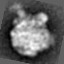

Usage Example - Operation: '
FS
'
Find Image statistics
Procedure used:
fs.spi
.OPERATION:
FS [max],[min],[avg],[std]
; Find Image Statistics
.INPUT FILE NAME OR TEMPLATE:
rib_avg
; Image (input)
Image

rib_avg
Output is to operation line registers:
[max]
[min]
[avg]
[std]
-9.227E-02
4.757E-02
-3.85676E-02
3.22950E-02